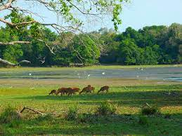

Untamed Wilderness at Wilpattu National Park
Wilpattu National Park, located in the northwestern part of Sri Lanka, # unfolds as an expansive wilderness, earning its reputation as the country's largest national park. Characterized by dense forests, scrublands, and a network of natural lakes known as villus, Wilpattu provides a sanctuary for a rich variety of wildlife. The park's untamed landscapes create a captivating backdrop for nature enthusiasts, offering an immersive experience into Sri Lanka's wild heart. Among its iconic inhabitants are the Sri Lankan leopard, Asian elephant, and diverse bird species, making Wilpattu a sought-after destination for those seeking encounters with the island's natural wonders.
Biodiversity Amidst Varied Ecosystems
Wilpattu National Park's diverse ecosystems contribute to its remarkable biodiversity, showcasing the delicate balance between terrestrial and aquatic environments. The interconnected network of villus within the park not only adds to its scenic charm but also attracts a variety of wildlife. Jeep safaris through Wilpattu allow visitors to witness the abundance of species, including spotted deer, sloth bears, mugger crocodiles, and a plethora of birdlife. The park's undulating terrain, dotted with lakes and surrounded by dense foliage, creates a captivating setting for exploration and wildlife observation.
Historical Ruins and Cultural Integration
Beyond its natural wonders, Wilpattu National Park harbors historical and archaeological treasures that add a unique dimension to the wilderness experience. The park features ancient ruins, including ancient Buddhist temples and structures, showcasing the historical depth of the region. As visitors traverse the park's trails, they have the opportunity to encounter remnants of ancient civilizations, blending the allure of historical exploration with the thrill of untamed nature. Wilpattu's ability to seamlessly integrate cultural heritage with its pristine landscapes makes it a destination that appeals to those seeking both historical insights and a deep connection with Sri Lanka's natural beauty.